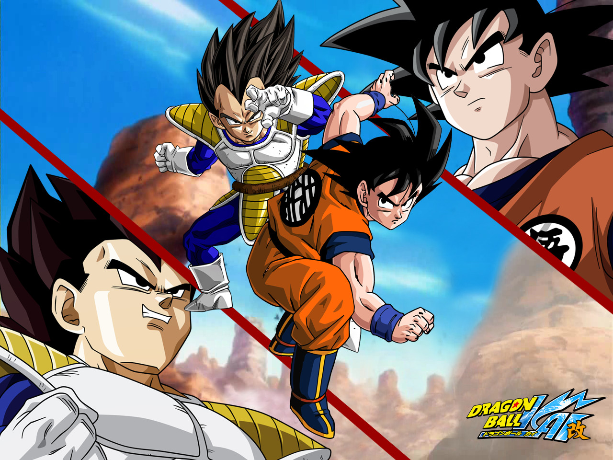
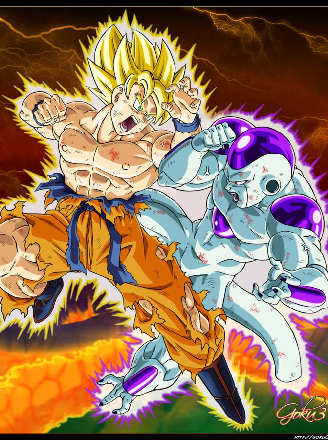
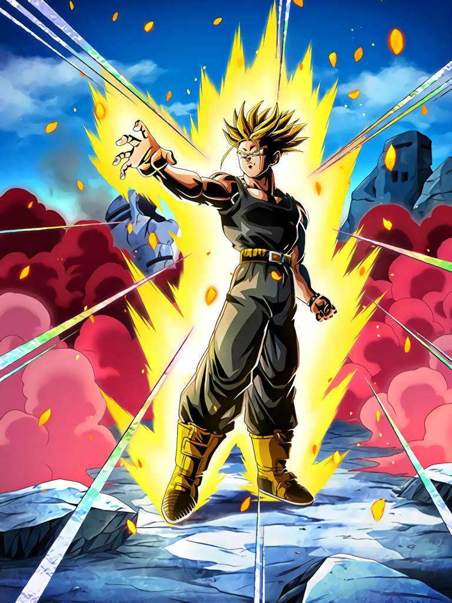

Dragon Ball is a Japanese media franchise created by Akira Toriyama in 1984 Since its release, Dragon Ball has become one of the most successful manga and anime series of all time, with the manga sold in over 40 countries and the anime broadcast in more than 80 countries. The manga's 42 collected tankōbon volumes have sold over 160 million copies in Japan, and are estimated to have sold more than 300 million copies worldwide, making it the second best-selling manga series in history.
Dragon ball can be divided by 5 arc :
The story of Dragon Ball z begins 5 years after Son Goku is beaten Piccolo and married with Chichi. We learn that Son Goku now has a son, named Son Gohan in honour to his adoptive grandfather.
While Son Goku wants to introduce his son to Kame Sennin, a mysterious person comes to interrupt the reunion between our friends. The foreigner in question is Raditz, he is the older brother to Son Goku. He belongs to the race of the saiyens. He came to earth to convince Son Goku to follow him. But Son Goku refuses, which annoys his brother Raditz. This one to convince him abducts Son Gohan, Raditz threatens to kill Son Gohan. Faced with this threat Son Goku has no choice but to fight Raditz. Son Goku announces his decision to his friends, when Piccolo suddenly appears small heart to help Son Goku. Bravely Son Goku and Son Goku face Raditz. Son Goku cling to his brother’s back and instructing Piccolo to send his most powerful attack. Piccolo sends his most powerful attack and pierces his enemy but also Son Goku. Raditz made a terrible confession, he teaches Son Goku and Piccolo that in a year the 2 other saiyens will be on their way to the earth to take the 7 crystal balls and kill everybody. The continuous fight, it is Nappa which dashes the first one. Seeing the power of their opponent our warriors test several techniques Nappa without any success. Chaoz decides to sacrifice for destroying Nappa, he self-destructs then on Nappa. But Nappa not die unfortunately for our friends. When Ten shin han sees that his best friend sacrificed himself for nothing he gets excited and dashes on Nappa. The saiyens kills then Ten shin han. Our friends are now at 3, but nappa is not finished he decides to eliminate Son Gohan now. Nappa throws out his breakneck wave, but at the last moment Piccolo sacrifies himself to save Son Gohan the only friend he’s ever had.Son Goku arrives and kills Nappa. Both saiyens decide to fight in the desert. His Goku fights against Vegeta, he now uses the technique he learned called Who is called: KAIOKEN.Seeing that Son Goku takes the advantage, Vegeta decides to show his form as Giant Gorilla. For this he must look at the Moon, but Piccolo destroys it because Son Gohan also turns into a gorilla. Vegeta then manufactures an artificial moon. It transforms and attacks its Goku. His Gohan feels his father is in trouble, so he decides to go back and help his father. Krilin and Son Gohan meet Yajirobe on their way back. All 3 go to help His Goku. Vegeta sees victory escaping him he decides to go with his ship, but Krilin interposes with the sword of Yajirobe, he is about to eliminate Vegeta when His Goku orders Krilin to let him live, His Goku lending Vegeta will help him fight common enemies.
Son Gohan, Bulma and Krilin set out towards Namek to retrieve the 7 crystal balls to resurrect all our friends who were killed by the 2 saiyens. But our friends don’t know that other people are also looking for the 7 crystal balls. A tyrant named freezer who is a very powerful warrior wants them to get eternal life. Vegeta too is in the game. Our friends fall on Commander Ginue, who is composed of Ginue, Recoom, Guldo, Jeece and Barta, they are servants of freezer. Vegeta is forced to join forces with Son Gohan and Krilin to defeat the commando. When His Goku is cured of his wounds, there are only two remaining members of the commando who are Ginue and Jeece, all the others have been eliminated by our friends. His Goku kills Jeece without any trouble. But he has some difficulties facing Ginue, because the one so has the ability to change body. Even with the body of His Goku Ginue fails to defeat His Goku. Son Gohan, Krilin and a young Namek named dende gathered the seven crystal balls and invoked the dragon. The if can grant 3 wishes, but it can only resurrect one person at a time. Piccolo wants to be resurrected and he also wants to be sent to the planet Namek. There will be no third vows, for the master of the Namek dies in the meantime. Going to the place of battle Piccolo falls on a Namek warrior named Nail, he is very powerful. Nail is dying so he proposes to Piccolo to be more powerful. When freezer sees in the distance the dragon, invoked by our friends, he rushes to try to grant are the dearest wishes. But freezer’s too late. Then he starts to fight our friends, but he’s having a hard time taking over, so he decides to transform himself. Piccolo arrives to help Krilin and Son Gohan. Despite its transformation freezer does not manage to take over on Piccolo. Freezer turns again, is this time it takes over on Piccolo. Son Gohan ravishes all his energy. And once again freezer is obsolete, it changes one last time. When freezer realizes that young Namek is dende and able to heal all the wounds of his friends. The first victim of his new transformation and dende, which is followed by very ready by Vegeta. He seriously hurts Piccolo and kills Krilin. Seeing this, Son Goku is so mad with rage that he reaches a stage of transformation which is that of SUPER SAIYEN. He now has golden hair and green eyes and incredible power. Son Goku and Freezer are fighting hard each wants to win. The Namek plant is about to explode when Son Goku sends his Kamehameha. The planet Namek explodes with freezer. Our friends want to bring Son Goku back to Earth, but the Dragon informs them that Son Goku does not wish to return immediately, but he will return later.
After beating freezer and his father, Trunks announces the arrival of His Goku on Earth. He reveals to him that he comes from the future and that he is the son of Vegeta and Bulma. He warns of the danger that threatens Earth: the arrival of cyborgs and the destruction of all human life on the planet. In addition, he gives her a drug explaining that in the future he died of heart disease. The young boy takes back his time machine and returns to the future...
